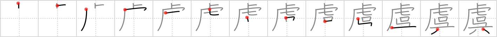

虞
← →
uneasiness

Reading:
On-Yomi: グ — Kun-Yomi: おそれ、おもんぱか.る、はか.る、うれ.える、あざむ.く、あやま.る、のぞ.む、たの.しむ
Heisig story:
Tiger . . . give.
Koohii stories:
1) [dingomick] 17-4-2007(205): The dentist couldn't help but feel uneasiness as he used his hand crank mouth tool on the tiger in his chair.
2) [RoboTact] 5-9-2007(54): My dear friend, a Bengali merchant, gave me a tiger as a birthday present. I felt uneasiness, knowing that I'll have to reject it. Or was it horror?
3) [Johnnyltn] 28-2-2007(37): A tiger overhead would give anyone a feeling of uneasiness.
4) [ericjurotich] 9-1-2010(21): Tigers give me a feeling of uneasiness.
5) [skinnyneo] 8-1-2008(14): I feel a sense of uneasiness about giving this HUGE tiger a steak.